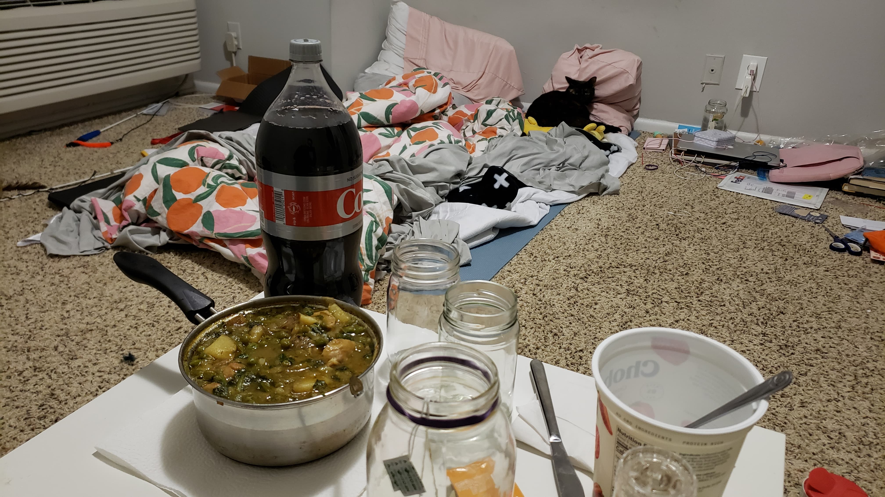

Disclaimer: I'm writing this from January 10th. Lots of things have happened and I just now got the time to sit down and do a journal entry.
It was a big day in terms of meetings. I started out with a meeting to discuss the proposed IdP architecture. For the most part, Ruben and I were on the same page once I properly explained everything in the diagram. Matthieu had more questions when we were done, so I cleared up some things and committed some code to show how do do it.
But the big news of the day was my meeting with Mike Maples of Floodgate. I met him before when I was invited to an online networking event as a KPCB fellow. He seemed interested in Solid and wanted to follow up. In the meeting I told him my situation. I'm working as a freelancer in the Solid ecosystem and "throwing spaghetti at the walls to see what sticks" as a full Solid product. I mentioned that to do anything like providing vaccine verification for the State of Hawaii, I would need some funding behind me, and even given the fact that I don't have a significant business yet, Mike still seemed interested. We'll set up a meeting with another partner, Ann, soon. So, I would say the meeting went about as well as it could go.
Finally, I spent the rest of the day packing with Ailin for the move to New York! Only one more night of sleeping on the floor and eating directly from a pot!
